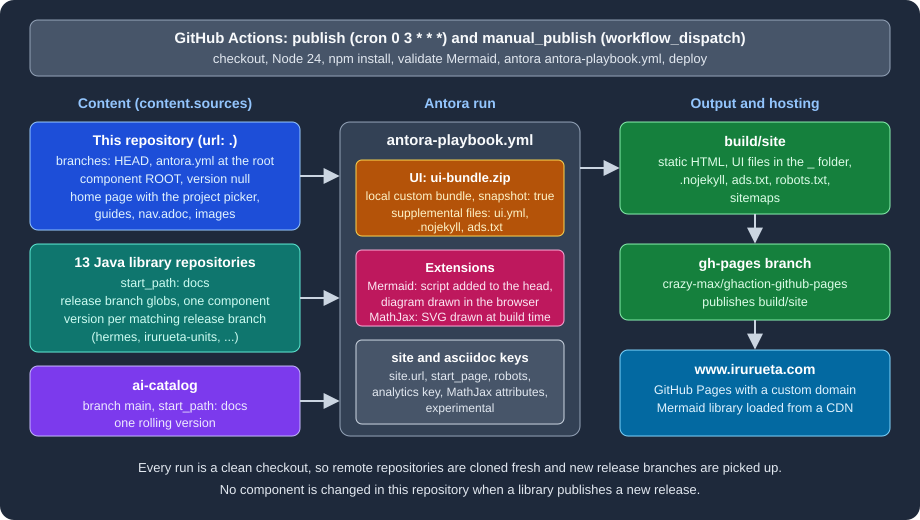

Case Study: This Site
|
This content was generated with the assistance of AI and should be verified against the official documentation before being relied on in production. |
This page was written against Antora 3.2.1 and checked on 2026-10-26. It dissects the site you are reading, Irurueta Docs,
using the files that really build it: antora-playbook.yml, antora.yml, ui-bundle.zip, package.json and the two
GitHub Actions workflows. Everything here is an excerpt or a measurement of those files; nothing was changed to make
the explanation easier. The running example of the rest of the section, Pocket Units, appears only in the last worked
example, where a small repository with release branches shows how the branch globs of this site behave.
What the site is and why it is built this way
Irurueta Docs aggregates the documentation of many independent GitHub repositories into one site. This repository holds
no application code. It holds the playbook, one local component named ROOT (the home page and the guides) and a few
build helpers. Thirteen Java library repositories and an AI catalog repository each keep their documentation next to
their own code, in a docs folder, and the playbook pulls those folders in.
This is the case Antora was designed for: the content stays in the repository of each product, so it is versioned with the code, while presentation and assembly are shared. When a library publishes a release branch, its documentation becomes a new component version on the site without touching this repository.
The complete picture is in the figure. A scheduled or manual GitHub Actions run installs Antora and its extensions,
validates the Mermaid diagrams, builds the site from the playbook and publishes the output folder to the gh-pages
branch, which GitHub Pages serves at www.irurueta.com.

Figure: the content sources, the UI bundle, the extensions and the deployment of Irurueta Docs.
The files that define the site
| File | Role |
|---|---|
|
The site definition: 15 content sources, the UI bundle, supplemental files, extensions and AsciiDoc attributes. |
|
The descriptor of the local component |
|
The pages, images, partials and |
|
The custom UI, committed to the repository (about 324 KiB, 76 entries) and loaded from a local path. |
|
Dependencies and npm scripts for local builds, Mermaid validation and chart generation. |
|
Parses every Mermaid block of every page; the CI job runs it before the build. |
|
The nightly and the on-demand build and deployment. |
The root component
antora.yml declares the local component. It is deliberately minimal:
name: ROOT
version: ~
title: Irurueta Docs
nav:
- modules/ROOT/nav.adocThe component is called ROOT, which Antora publishes at the root of the site, and its version is ~ (YAML null),
the versionless form. A versionless component has no version segment in its URLs, so the pages of this repository live at
paths such as /documentation-tools/antora/playbook.html. The playbook entry start_page: ROOT::index.adoc makes the
home page the landing page. In the scratch build described below, the ROOT home page was written to the site root as
index.html.
The local source in the playbook points at this very repository and selects whatever branch is checked out:
content:
sources:
- url: .
branches: HEADSource: Antora docs: Worktrees
There is no start_path, so Antora looks for antora.yml at the repository root. The remote repositories, in contrast,
keep their component under docs, which is why each of them declares start_path: docs.
The project picker
modules/ROOT/nav.adoc lists the projects as cross-references into the other components, for example
xref:irurueta-units::index.adoc[Units]. The home page, modules/ROOT/pages/index.adoc, shows the same projects as a
grid of images, one table cell per project. This is an excerpt with two cells:
[cols="1,1,1",frame=none,grid=none]
|===
a|
image::hermes.svg[xref="hermes::index.adoc"]
a|
image::units.svg[xref="irurueta-units::index.adoc"]
a|
|===Source: Antora docs: Page-to-page xrefs
Each image has the xref attribute, so the picture is a link to the index.adoc of that component. The component
name before the double colon is the name in the remote repository’s own antora.yml. For
irurueta-units at branch release_1.4.0, that file reads name: irurueta-units, version: 1.4.0 and
title: Irurueta Units, which this page read from the repository on GitHub. Adding a project to the site therefore
takes four edits in this repository: a content source in the playbook, an image in modules/ROOT/images/, an entry in
nav.adoc and a cell in index.adoc.
Content sources: one repository, many release branches
The playbook has 15 content sources: the local one, 13 Java repositories (hermes, irurueta-units,
irurueta-statistics, irurueta-sorting, irurueta-algebra, irurueta-numerical, irurueta-geometry,
irurueta-geometry-io, irurueta-ar, irurueta-navigation, irurueta-navigation-indoor,
irurueta-navigation-inertial and irurueta-navigation-inertial-extra) and ai-catalog. This is an excerpt with the
three kinds of entries that occur:
content:
sources:
- url: https://github.com/albertoirurueta/irurueta-units.git
branches:
# Support version 1.4.0+
- release_1.{4..99}*
- release_{2..99}*
start_path: docs
- url: https://github.com/albertoirurueta/irurueta-navigation-indoor.git
branches:
# Support version 1.6.0+
- release-1.{6..99}*
- release_1.{6..99}*
- release-{2..99}*
- release_{2..99}*
start_path: docs
- url: https://github.com/albertoirurueta/ai-catalog.git
branches:
- main
start_path: docsSource: Antora docs: Select branches
These choices are the core of the design:
-
Only release branches are read. A branch named like the release tag contains the documentation of that release, and
develop,master,gh-pagesand thesync_*branches of the repositories never match a pattern. -
The patterns use brace ranges.
release_1.{4..99}*matches every1.xrelease from1.4upward, andrelease_{2..99}*matches the major versions 2 to 99, so a new minor or major release is picked up by name alone. The comment above each list states the oldest release that has an Antora documentation module, because older release branches have none. -
One repository can use two naming conventions.
irurueta-navigation-indoorhas branches namedrelease-1.6.0(hyphen) and others namedrelease_1.6.0(underscore), so its list contains both spellings. -
ai-cataloghas no releases, so it contributes a single rolling version frommain. -
No
tagsare selected, so release tags are not read. -
The component version is not taken from the branch name but from the
versionkey ofdocs/antora.ymlon that branch. The branch globs only decide which branches are read.
The playbook does not set git.fetch_depth or any authentication, because all sources are public repositories.
Seeing the globs in action
A GitHub account is not needed to see how such patterns behave. This scratch repository has branches named like the
real ones, each with a docs/antora.yml whose version equals the branch number, and the playbook uses the same two
patterns as irurueta-units:
site:
title: Glob demo
start_page: demo-lib::index.adoc
content:
sources:
- url: ./lib
branches:
- release_1.{4..99}*
- release_{2..99}*
start_path: docs
ui:
bundle:
url: ui-bundle.zipSource: Antora docs: Refname matching
The repository lib has the branches develop, main, release_1.3.0, release_1.4.0, release_1.10.0,
release_2.0.0 and sync_1.5.0, and the UI bundle is a copy of this site’s ui-bundle.zip. Running Antora 3.2.1 and
listing the component folder gives:
npx antora antora-playbook.yml
ls build/site/demo-lib1.10.0
1.4.0
2.0.0Source: Antora docs: Antora CLI
Release 1.3.0 is older than the first pattern and is skipped, develop, main and sync_1.5.0 match nothing, and
1.10.0 is selected, so the range works on numbers and not on text. Antora orders the versions as semantic versions:
the site root redirected to demo-lib/2.0.0/index.html, so 2.0.0 is the latest.
The custom UI bundle
The UI section of the playbook, reproduced here with the analytics, publisher and certification identifiers replaced by placeholders, is:
site:
title: Irurueta Docs
url: https://www.irurueta.com
robots: allow
start_page: ROOT::index.adoc
keys:
google_analytics: '<YOUR_GOOGLE_ANALYTICS_ID>'
ui:
bundle:
url: ui-bundle.zip
snapshot: true
supplemental_files:
- path: ui.yml
contents: |
static_files:
- .nojekyll
- ads.txt
- path: .nojekyll
- path: ads.txt
contents: |
google.com, pub-<YOUR_PUBLISHER_ID>, DIRECT, <YOUR_CERTIFICATION_ID>Source: Antora docs: UI keys
ui-bundle.zip is a custom bundle committed at the repository root. Listing it shows the standard anatomy of a bundle:
the folders css, font, helpers, img, js, layouts and partials, with layouts/default.hbs and
layouts/404.hbs as the layouts, the stylesheet css/site.css, Roboto web fonts, the helpers and, detag, eq,
increment, ne, not, or, relativize and year, and js/vendor/highlight.js for code highlighting. The bundle
has no ui.yml. Reading its partials also shows that it sets an SVG favicon in head-icons.hbs, defines a one-line
footer in footer-content.hbs, and loads a search script only when the environment variable
SITE_SEARCH_PROVIDER is set, which is the contract of the Lunr extension. How bundles are structured and built is
explained in UI Bundle and
Building a Custom UI.
Why snapshot: true has no effect here
snapshot: true tells Antora to download a remote bundle again whenever the build runs with fetch enabled; without
it, a bundle fetched from a fixed URL is cached forever. This site, however, uses a local path, ui-bundle.zip, resolved
from the directory where Antora is started. Reading the load-ui.js source of @antora/ui-loader (the same code is in 3.1.15 and 3.2.1) shows that the snapshot and cache logic runs only when the value is a URL; a local path is
read directly every time. The key is therefore harmless but inactive: a changed ui-bundle.zip is picked up by the next
build, and the git history confirms how the bundle is maintained, as ordinary commits (for example "Updated Antora UI
bundle").
If the bundle moved to a fixed URL, such as a release asset, snapshot: true would become necessary together with
--fetch or runtime.fetch: true.
Supplemental files
The supplemental_files list adds three files to the bundle without rebuilding it. The playbook uses the list form;
the directory form cannot be combined with it.
| Path | Purpose |
|---|---|
|
Replaces the bundle’s descriptor (this bundle has none) and lists |
|
No |
|
The advertising authorization file, a single line published at the site root. |
A file listed in static_files is published at the site root instead of under the UI folder. In the scratch build, with
this section of the playbook, the site folder contained .nojekyll and ads.txt next to index.html. When the
.nojekyll line was removed from static_files, the output no longer contained that file, because Antora does not
publish files whose names start with a dot unless they are listed there. See
Supplemental UI for the full rules.
Diagrams and math
The extensions are configured at the end of the playbook:
antora:
extensions:
#- require: "@antora/lunr-extension"
- require: '@sntke/antora-mermaid-extension'
mermaid_library_url: https://cdn.jsdelivr.net/npm/mermaid@11/dist/mermaid.esm.min.mjs
script_stem: header-scripts
mermaid_initialize_options:
start_on_load: true
asciidoc:
attributes:
mathjax-tex-tags: ams
mathjax-tex-packages: ams boldsymbol
experimental: ''
extensions:
- '@djencks/asciidoctor-mathjax'Two extensions are active and they work in opposite places:
-
Mermaid (
@sntke/antora-mermaid-extension0.0.13) turns a[mermaid]block into a raw HTML element and, when the UI is loaded, adds a head partial whose stem isheader-scripts. The bundle’sheader.hbsrenders that partial. The partial imports the Mermaid 11 library from the jsDelivr CDN and callsmermaid.initialize. The playbook keystart_on_loadreached the page as{"startOnLoad":true}in a scratch build, because Antora converts configuration keys to camel case. The diagram is drawn in the reader’s browser, so the page needs network access to the CDN. -
MathJax (
@djencks/asciidoctor-mathjax0.0.9) renders formulas on the server, during the build. In a scratch page with:stem: latexmath, an inlinestemmacro and a[stem]block were written as inline SVG, with no script. In the same test the bare delimiters\(x^2\)stayed as literal text, so the macro and block forms are the ones to use. The twomathjax-tex-*attributes configure the TeX packages.
experimental: '' sets the AsciiDoc experimental attribute, which enables the keyboard, button and menu macros.
@antora/lunr-extension is listed in package.json and installed by the workflows, but its require line is commented
out in the playbook, so the site has no built-in search. Search and its alternatives are covered in
Site Search.
A Mermaid diagram that does not parse is not reported by the Antora build, because the diagram is only parsed in the
browser. That is why the repository carries scripts/validate-mermaid.mjs: it runs every block through the Mermaid
parser and fails the workflow before the build when one is broken. Locally, install the validator dependencies once and
run it:
npm i --no-save mermaid@11 jsdom
npm run validate:mermaidSource: Antora Mermaid extension
This command was not executed here against the whole site, which has thousands of diagrams; the script was run on the Documentation Tools pages while writing them.
Nightly deployment
The workflow publish.yml runs every day at 03:00 UTC. manual_publish.yml has the same steps and runs on
workflow_dispatch, for a build on demand. The file below is publish.yml verbatim; the step names are in Spanish.
name: publish
on:
schedule:
- cron: '0 3 * * *' # todos los días a las 03:00 UTC
jobs:
publish:
runs-on: ubuntu-latest
steps:
- name: Checkout del código
uses: actions/checkout@v5
- name: Install Node
uses: actions/setup-node@v4
with:
node-version: 24
- name: Install Antora
run: |
npm i -D -E antora
npm i @antora/lunr-extension
npm i @sntke/antora-mermaid-extension
npm i @djencks/asciidoctor-mathjax
- name: Validate Mermaid diagrams
run: |
npm i --no-save mermaid@11 jsdom
node scripts/validate-mermaid.mjs
- name: Build Antora docs
run: npx antora antora-playbook.yml
- name: Deploy to GitHub Pages
if: success()
uses: crazy-max/ghaction-github-pages@v5
with:
target_branch: gh-pages
build_dir: ./build/site
fqdn: www.irurueta.com
env:
GITHUB_TOKEN: ${{ secrets.GITHUB_TOKEN }}The workflow was not executed here, because it needs the GitHub repository and its token; the equivalent local steps (install, build) were run in a scratch directory. Points worth noting:
-
The runner starts from an empty directory, so Antora clones every remote repository fresh and sees all branches that exist at that moment. No
--fetchis needed. A library that publishesrelease_1.5.0appears on the site after the next nightly run, or immediately after a manual run. -
The workflow deploys with
crazy-max/ghaction-github-pagesinstead of the official Pages actions. It pushesbuild/siteto thegh-pagesbranch and passes the custom domain infqdn. The step runs only if the build succeeded. The token is the automaticGITHUB_TOKEN; no personal secret is involved. -
Antora is installed with
npm i -D -E antora, which has no version, so the workflow uses the latest release at run time (3.2.1 when this page was checked). Thepackage.jsoncommitted in the repository pinsantora3.1.15 for local builds. The extensions are installed without versions as well. A local build and the published build can therefore use different Antora versions. -
The Mermaid validation step sits before the build, so a broken diagram stops the deployment and the previous site stays live.
The release flow, from a library repository to the published site, is:
Figure: how a release branch of a library repository becomes a version of the published site.
Building locally
The commands to build this site on a workstation, with Node.js installed, are the ones documented in the repository’s CLAUDE.md:
npm install
npx antora antora-playbook.yml
npx antora --fetch antora-playbook.ymlSource: Antora docs: Antora CLI
The first build clones the remote repositories into the Antora cache; --fetch updates them on later runs. The output
goes to build/site, which is ignored by git. Only a build that finishes without unresolved xref or AsciiDoc errors
is meaningful, and figures need extra checking: this repository’s CLAUDE.md documents that an image macro split over two
lines is rendered as plain text without any build error, so block macros are kept on one line and checked with grep.
These commands were not run against the whole site here, because that would clone all 14 remote repositories.
Pitfalls and lessons
-
The comment above a branch list and the pattern can drift apart. In the playbook, the comment of
irurueta-navigation-inertial-extrasays "Support version 1.10.0+" while the pattern isrelease_1.{8..99}*, so the pattern is what decides: release 1.8.0 is read. Keep the comment and the first number of the range in sync. -
A repository with two branch naming conventions needs a pattern per convention, as
irurueta-navigation-indoorshows. A hyphen where an underscore is expected simply selects nothing for that branch. -
Each branch decides its own version through its
antora.yml, not through its name, so a release branch whose descriptor keeps an oldversionwould be published under that old version. -
snapshot: trueis useful only for a remote bundle. For a local file it does nothing. -
Dotfiles in a UI, such as
.nojekyll, are published only when listed instatic_files. -
Mermaid is loaded from a CDN at version range 11 and drawn in the browser, so diagrams depend on the CDN and on the parser of whatever 11.x is current. The validation script, run before every deployment, catches syntax errors that the pinned major version still rejects.
-
The workflow installs unpinned Antora and extension versions; a major release of any of them could change the output without a change in this repository.